ЛАБОРАТОРНО-ПРАКТИЧНА РОБОТА
Тема: «ПОЧАТКОВІ ШВИ»
Мета: засвоєння технік виконання початкових та декоративних швів; формування вмінь виконувати різні початкові та декоративні шви, що використовуються у вишивці; виховувати уважність, охайність.
Матеріали та інструменти: тканина, нитки, голки, ножиці, наперсток.
Порядок виконання роботи:
- Ознайомитись з теоретичними відомостями роботи.
- Виконати завдання практичної роботи.
- Закріпити нитку на тканині різними способами
- Виконати згідно з технологічними вимогами зразки початкових швів 10 см завдовжки кожний.
Теоретичні відомості:
Початкові шви дуже прості для виконання й застосовуються в шитті та вишиванні. Якщо в шитті їх використовують, щоб з’єднати окремі частини тканини або виробу і обробити краї, то у вишиванні на їхній основі створено безліч варіантів декоративних швів.
До початкових швів належать контурні та оздоблювальні шви, що застосовуються в узорах рослинного орнаменту як основні, а в багатьох інших – як допоміжні. У виконанні ці шви прості, однак під час вишивання слід стежити за тим, щоб стібки були одного розміру на певній кількості ниток і не стягували тканину. Початкові шви виконують за контуром малюнка або ж ними суцільно заповнюють окремі елементи узору. Під час виконання цих швів нитку закріплюють на лицьовому боці тканини за допомогою швів уперед голку, назад голку, у петлю, які потім покривають настилом вишивки.
Закріплення робочої нитки (рис. 14). На відміну від шиття у вишиванні не роблять вузликів, не залишають на звороті довгі петлі та кіпці ниток. Чистий зворотний бік, акуратно виконана робота властиві народній вишивці.
Під час вишивання одинарною ниткою її кінець закріплюють кількома маленькими стібками на тому місці, яке в процесі шиття закриється вишивкою (рис. 14, а), або після першого проколу залишають на звороті кінець нитки завдовжки 10 см і після закінчення робочої нитки закріплюють його під вишитими стібками, продівши в голку.
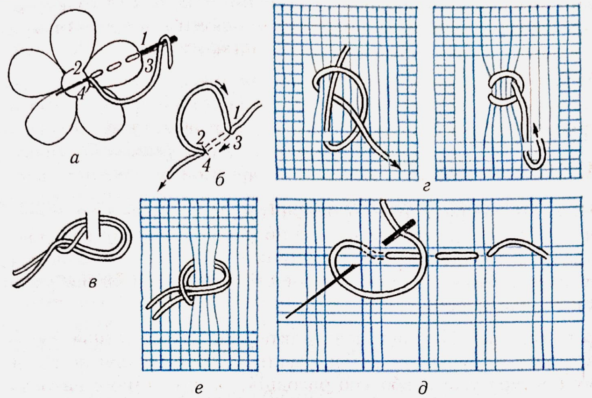
Рис. 14.Закріплення робочої нитки на тканині:
а, б, г, д – одинарної; в, е – складеної вдвоє
Можна закріпити кінець нитки стібком назад голку (рис. 14, б). Для цього роблять прокол голкою з лицьового боку (точка), виколюють голку у точці 2 і протягують нитку, залишаю чи кінець завдовжки 5–10 см. З лиця маленьким стібком назад голку зліва направо (2–3) нитку зі споду пришивають, виводячи голку у точці 2. Закінчуючи роботу, кінець нитки зрізують або ховають під вишивкою.
Якщо вишивають у дві нитки, то нитку, складену вдвоє, протягують кінцями в отвір голки (рис. 14, в). Потім роблять маленький стібок у місці, де починається рисунок, і тягнуть нитки доти, доки не залишиться кінчик у вигляді маленької петельки. У цю петельку протягують голку з робочою ниткою й затягують її.
Закінчуючи роботу, нитку закріплюють під вишивкою зі споду кількома дрібними стібками шва вперед голку або назад голку, а кінці зрізують ножицями.
В ажурних вишивках одинарну нитку закріплюють на невисмикнутих нитках тканини петелькою маленьким вертикальним стібком або прошивають стібками шва вперед голку так, щоб місце закріплення залишилося непомітним (рис. 14, г, д). Складену вдвоє нитку відразу закріплюють петелькою (рис.14, е).
Роздивимось прості шви.
Шов уперед голку, або затяганка (рис. 15), – найпростіший і найлегший у роботі, виконують його стібками однакової довжини (рис. 15, а). Довжина стібків, частота й від стань між ними залежать від призначення шва.
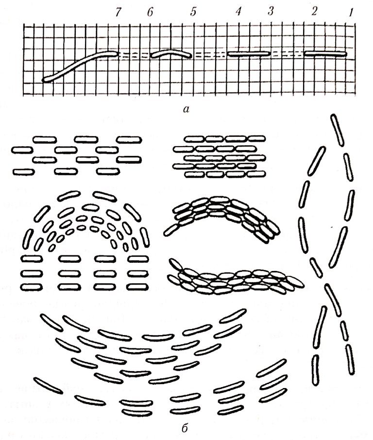
Рис. 15.Шов уперед голку
У шитті шов уперед голку застосовують для зшивання тканини, позначення середини виробу або контуру візерунка, виготовлення зборок та вафель. Залежно від призначення змінюється і назва шва.
Зметувальний шов застосовують для тимчасового з’єднання двох і більше шарів тканини. Довжина стібків становить 0,7–3,0 см, відстань між ними зазвичай 2–5 мм.
Прокладний шов призначений для наметування та позначення центральних ліній виробу. Стібки завдовжки 1–2 см виконують на відстані 0,5–1,0 см.
Виконуючи зборки, стібки прокладають в один і більше рядів на відстані 0,3–0,7 см. Чим дрібніші стібки і менша відстань між ними, тим рівномірнішими будуть зборки.
Якщо змінювати довжину стібків і відстань між ними, збільшувати кількість рядів, додавати різнобарвні питки, то за допомогою цього шва можна створити безліч варіантів узорів (рис. 15, б) для оздоблення одягу, проклавши товстими нитками стібки на комірі, вздовж ліній швів, на кишенях. Ним прикрашають предмети побуту (серветки, диванні подушки, панно), вишиваючи квіти, листя та окремі узори тільки по контуру або зашиваючи всю їх площину (рис. 16).
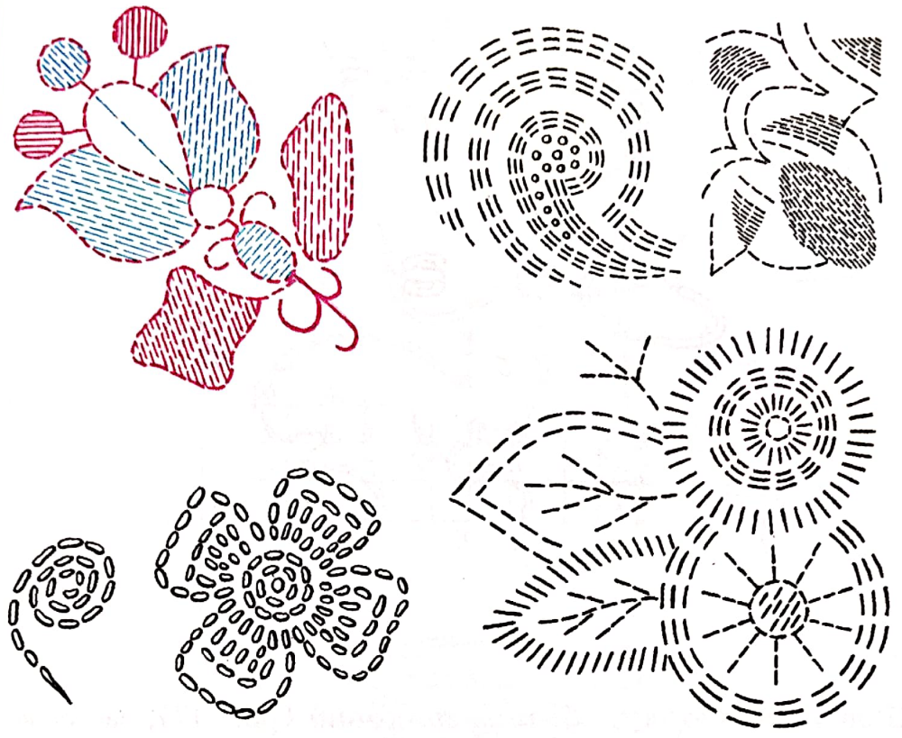
Рис. 16.Узори для вишивання швом уперед голку
Шов назад голку, або позаголковий (рис. 17), застосовують у шитті як з’єднувальний – для скріплення окремих деталей та у вишиванні. З лицьового боку він нагадує шов уперед голку, а зі споду – стебловий.
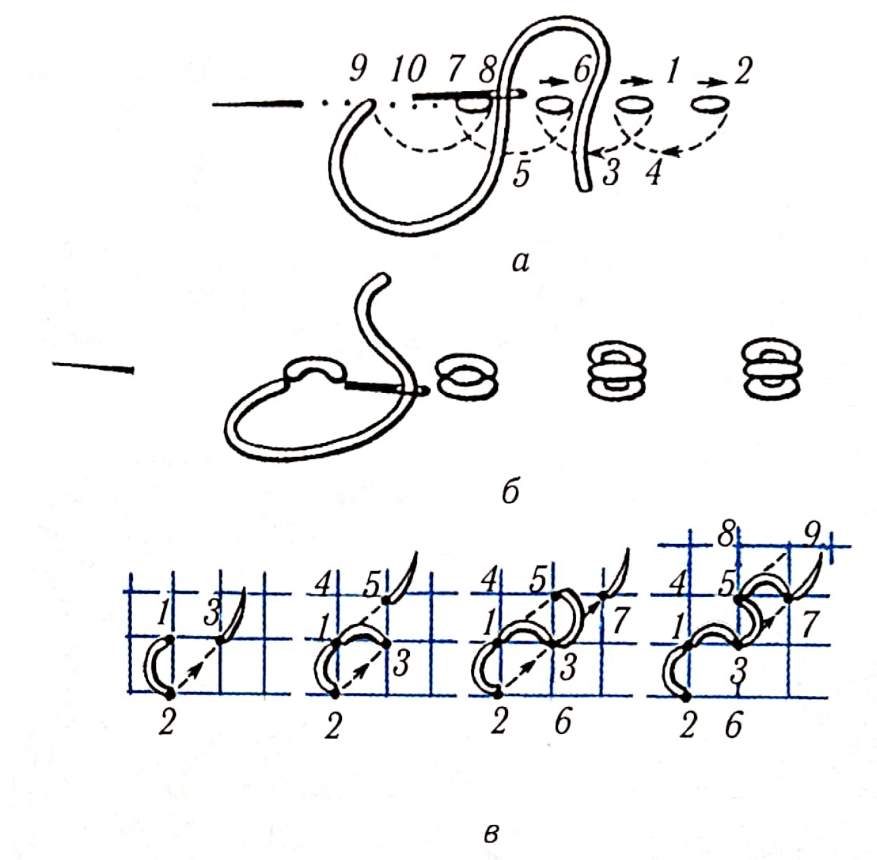
Рис. 17. Шов назад голку:
а - послідовність виконання; б - бісерний шов, або насип; в - позаголковий, або кучерявий, шов
Прокладають стібки шва справа наліво так, щоб голка з ниткою весь час входила в тканину позаду від проколу – початку стібка, а виходила на півтора-два стібки попереду (рис. 17, а). Розмір стібків залежить від товщини тканини.
Насип, або насипку (рис. 17, б), вишивають стібками назад голку. Подекуди в Україні його називають дзьобанкою. Шов має вигляд дрібненьких крапок на одній-двох нитках тканини і застосовується у рушникових заповненнях та білій гладі. Шиють його з двох-трьох стібків завдовжки 2–5 мм, які виходять з одного проколу.
Шов позаголковий, або коциком, кучерявий (рис. 17, в),створено також на основі шва назад голку. Виконують його за рахунком ниток тканини товстими нитками (вовна, ірис, ДМС). Кожен стібок не прилягає щільно до тканини, а кладеться невисокими (завдовжки 2–3 мм) петлями на правому боці. Цим швом вишивають рукави жіночих сорочок на Буковині, Прикарпатті, Західному Поділлі та в деяких інших регіонах.
На основі шва назад голку створено багато декоративних швів, якими зашивають тло окремих частин узорів або весь узор петлями різної довжини у килимках, панно, що надає вишивці опуклості.
Однобічна штапівка, або вистіг, ручна строчка (рис. 18), виконується швом назад голку і нагадує машинну строчку зі щільно прилеглих один до одного стібків. Шов виконують справа наліво дрібними стібками однакової довжини.
Відстань між початком і закінченням стібка зі споду становить дві довжини стібка з лиця (рис. 18, а).
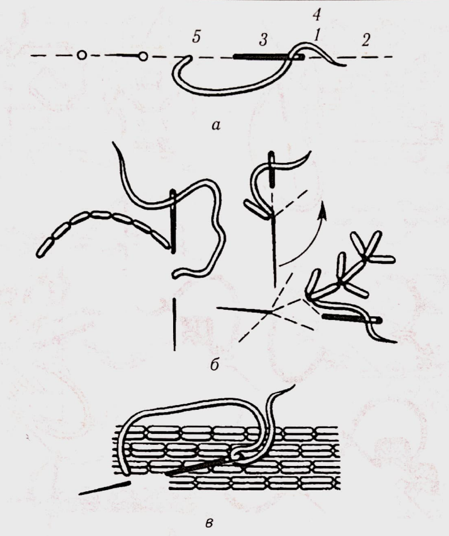
Рис. 18.Вистіг, або ручна строчка:
а - варіанти виконання шва; б - декоративна строчка; в - настил
Цей шов має свої місцеві назви: на Київщині – вистіг, на Полтавщині – штапівка, на Поділлі – стебнівка. Декоративну строчку показано на рис. 18, б.
У шитті вистіг застосовують для з’єднання окремих деталей, а у вишиванні – для обшивання контурів узорів або зашивання всієї їх площини (рис. 18, в). Ним виконують окремі фігури в лічильних швах (рис. 19, а) та обводять узори, вишиті іншими швами (рис. 19, б).

Рис. 19.Виконання строчкою: а - окремих фігур; б – обводки
Шов шнурок (рис. 20) складається зі стібків різних початкових швів у один і більше рядів, які можна оздобити, обплітаючи кольоровими нитками. Спочатку на тканині по лінії узору прошивають один ряд стібків або паралельно один одному два, три і більше рядів. Потім їх обвивають кольоровою ниткою, створюючи різні узори.
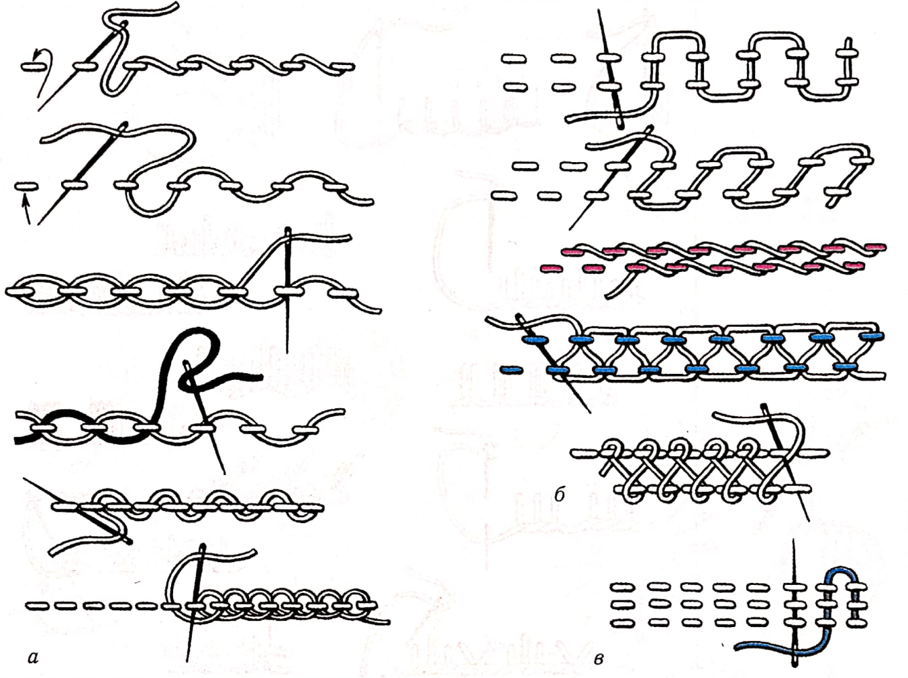
Рис. 20.Шнурок на основі початкових швів:
а - в один ряд; 6 - у два ряди; в - у три ряди
Ряд вистігу, обплетений кольоровою ниткою, називають бігунцем. Шов петельний крайовий, або обмітку (рис. 21), застосовують у шитті для обкидання петель і країв виробів та у вишиванні. Шов складається зі стібків у вигляді петельок різної форми. Тканину проколюють голкою зверху вниз по вертикальній лінії (нитка при цьому завжди залишається під голкою) і протягують робочу нитку до утворення петельки (рис. 21, а). Коли обметують петлі, то утворюють глуху петлю (рис. 21, б), щоб міцнішим був край.
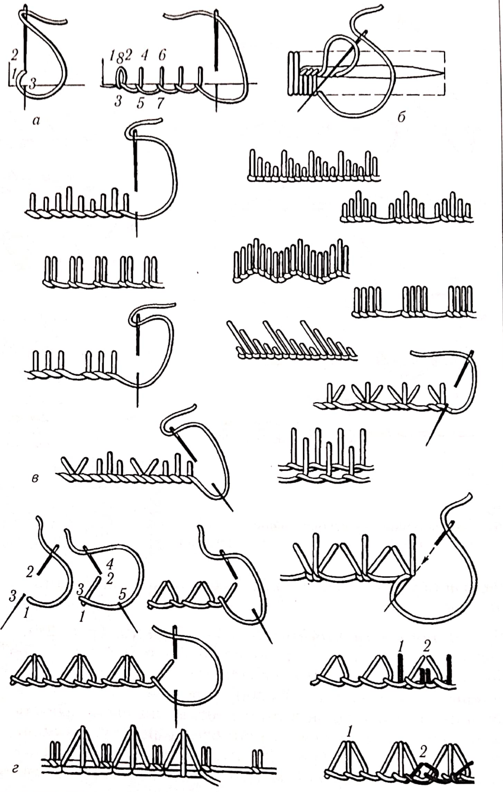
Рис. 21.Шов петельний крайовий, або обмітка:
а - початок обмітки; б - виготовлення глухої петлі; в, г - варіанти петельного шва
у вишивці висоту стібків визначають за попередньо прокладеними нитками по контуру узору. Їх можна класти щільно один до одного або на відстані, розміщувати групами, надавати і напрямки та форми, прикрашати нитками іншого кольору (рис. 21, в, г).
Петельний шов застосовують також для оброблення рівних і фестончастих країв виробів. Щоб надати їм міцності та опуклості, його виконують по настилу, вишивають квіти й листя (рис. 22).
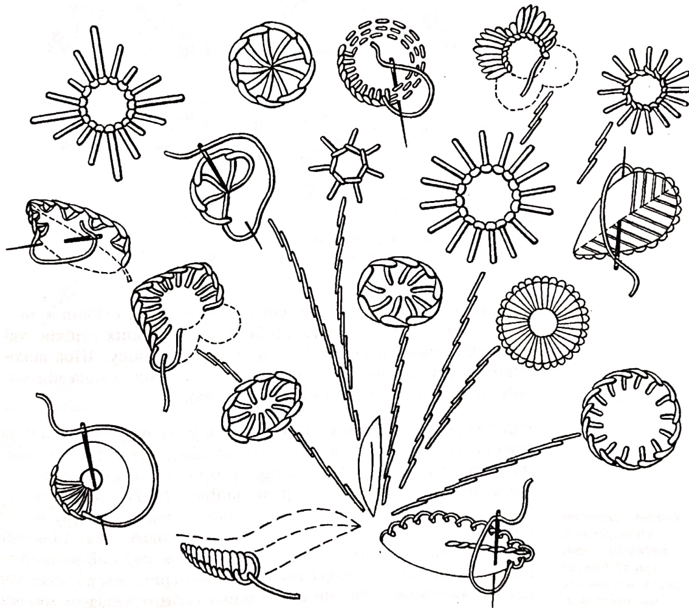
Рис. 22.Зразки вишивання петельним швом квітів і листя
Шов козлик (рис. 23) має вигляд схрещених стібків з лицьового боку та двох рядів дрібних паралельних стібків, які нагадують шов уперед голку, зі зворотного боку. Шов виконують зліва направо стібками різної довжини. Голка під час роботи завжди повернута вістрям уліво.
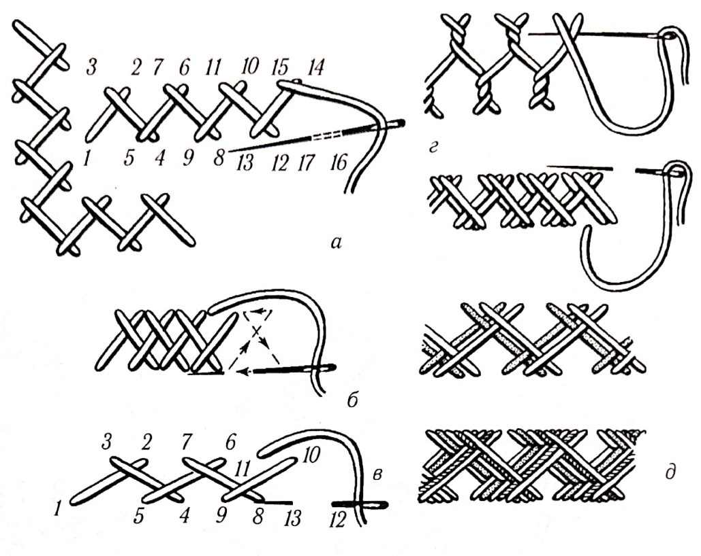
Рис. 23.Шов козлик та його різновиди:
а - послідовність виконання; б - густий; в - широкий; г - обкруткою; д - оксамитовий, або шотландка
Під час роботи тканину притримують у натягнутому стані на вказівному пальці лівої руки. Нитку закріплюють у нижньому ряду зліва (1), потім з лицьового боку роблять голкою проколи на верхній лінії справа наліво (2–3) і протягують нитку. Утворюється перший похилий стібок 1–2. Другий стібок 3–4 роблять зліва направо і закріплюють його проколом 4–5 на нижній лінії. У місцях схрещення кожний новий стібок козлика лягає поверх попереднього (рис. 23, а). Залежно від відстані між стібками шов можна робити вузьким або широким, розрідженим чи густим, з обкруткою (рис. 23, б–г).
Козлик, вишитий кольоровими нитками у два, три та більше рядів, називають оксамитовим, або шотландкою (рис.23, д). Він потребує вдалого поєднання кольорів та відповідного їх чергування.
Шов вісімка, або плетений, відрізняється від козлика тим, що з вивороту дрібні стібки йдуть не паралельними горизонтальними рядами, а по вільному контуру (рис. 24, а, б ). Застосовують цей шов у вишиванні елементів узору видовжених контурів (рис. 24, в, г) як основний і допоміжний.
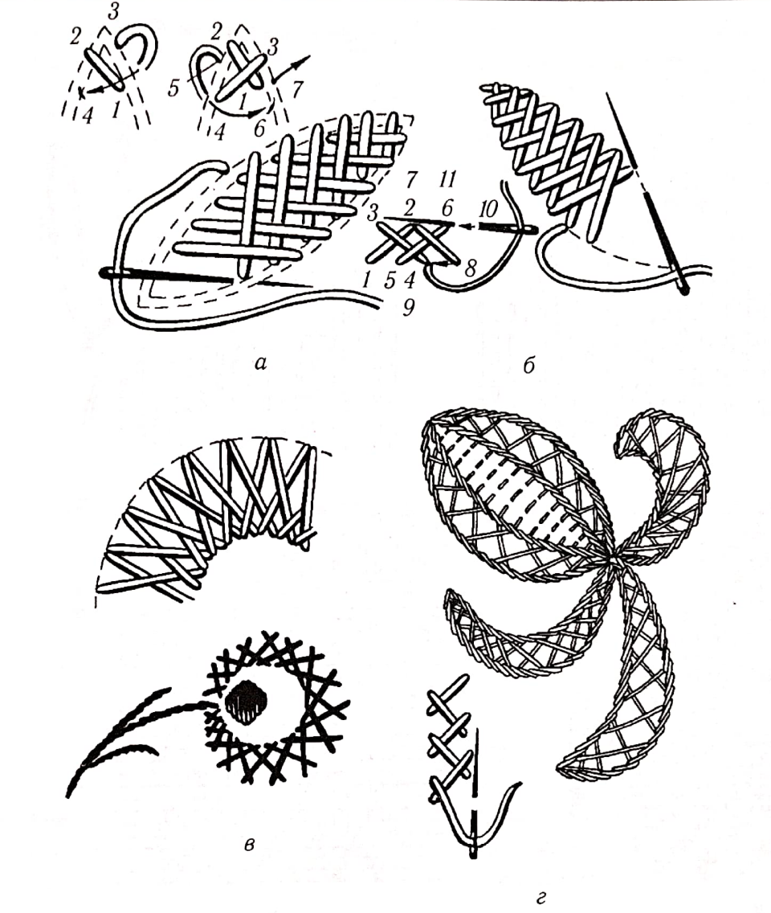
Рис. 24.Зразки вишивання швами козлик і вісімка
У традиційних народних і сучасних вишивках застосовують багато декоративних швів, які прикрашають одяг, білизну, рушники, вироби побутового призначення тощо. Поряд із стародавніми способами накладання стібків з’явилися нові, легші за технікою виконання, декоративніші різновиди швів.
Шов стебловий, або стебнівку (рис. 58), застосовують як самостійний та в поєднанні з іншими швами. Цей шов виконують зліва направо назад голкою або зверху вниз та навпаки. Кожен новий стібок починають від середини попереднього (рис. 58, а, б). Треба стежити, щоб робоча нитка завжди виходила з одного боку від раніше вишитих стібків. Аби шов був рівним, слід класти стібки однакової довжини та не затягувати нитку. Стебловий шов можна зробити з переривами. Ним вишивають не тільки контури узорів (рис. 58, в–д), а й заповнюють усю площину (рис. 58, г). У білій гладі його застосовують для вишивання стебел квітів.
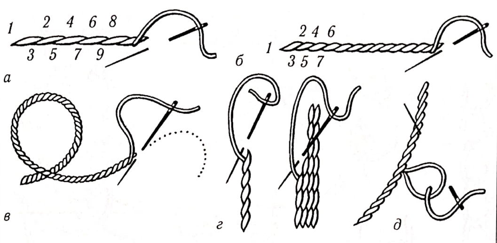
Рис. 58.Шов стебловий та його різновиди:
а - звичайний; б - шнурочком; в-д - застосування у вишивні
До вільних декоративних швів належать тамбурні шви, які мають багато різновидів. їх назва походить від спеціальних круглих п’яльців, подібних до великого барабана «тамбур», які застосовували для вишивання великих шовкових килимів і покривал. У вишивках Давніх Індії, Ірану, Риму, Греції, Сирії ручні тамбурні шви були відомі ще до початку нашої ери, а вишивки тамбурним швом із Пазирикських курганів датуються V–III ст. до н. е. З часом мистецтво тамбурної вишивки поширилося в багатьох країнах Європи та Азії. У кінці XIX ст. було винайдено спеціальні машини, які викопували 17 видів тамбурних швів.
Шов тамбурний, або ланцюжок, у народному вишиванні спочатку застосовували для вишивання тільки контурів узорів, а з середини XIX ст. різними варіантами тамбурних швів оздоблювали рушники, скатерті, одяг, головні убори в багатьох країнах. На Буковині ланцюжком вишивали уставки жіночих сорочок, використовуючи золоті та срібні нитки.
Ланцюжок однорядний (рис. 59) – глухий однобічний шов, що складається з ряду петельок, які виходять одна з одної і нагадують ланцюжок, зв’язаний гачком, із лицьового боку та строчку – із зворотного (рис. 59, а). Вишивають його зверху вниз, справа наліво і по контуру узору. Залежно від розмірів стібків та нахилу їх за формою ланцюжки бувають: довгі, короткі, вузькі й широкі (рис. 59, б).
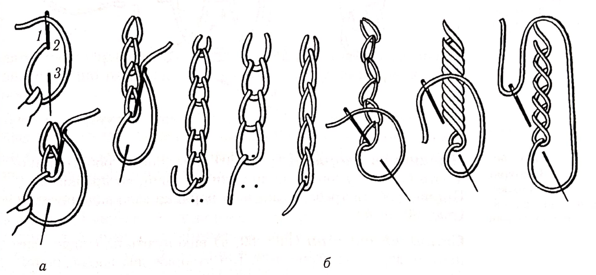
Рис. 59.Тамбурний ланцюжок однорядний:
а - послідовність виконання; б - різновиди шва
Однорядним ланцюжком вишивають переважно рослинні орнаменти по контуру узору або заповнюють деталі та всю його площину.
Петля уприкріп (рис. 62) створена на основі тамбурного шва і складається з ряду ізольованих петельок, розміщених по узору. Залежно від призначення виробу, фактури тканини, обраного візерунка добирають товщину ниток.
Для того щоб зробити петлю, треба закріпити нитку на зворотному боці й вивести її на лицьовий бік (рис. 62, а, точка 1), відкинути донизу, притримуючи великим пальцем лівої руки.
Потім ввести голку зверху вниз поряд із закріпленням нитки (точка 2) і вивести її на лицьовий бік гострим кінцем униз (3) на відстані розміру петлі; закріпити петлю на тканині стібком потрібної довжини. Так само можна зробити петлю з кількома прикріпками (рис. 62, б) і фігурну петлю (рис. 62, в).
Безліч узорів можна створити від тамбурної петлі, надаючи їй різних положень. Можна закріпити петлю коротким або довгим стібком, у середині великих петельок зробити менші петельки, закріпивши верх петлі прикріпками.
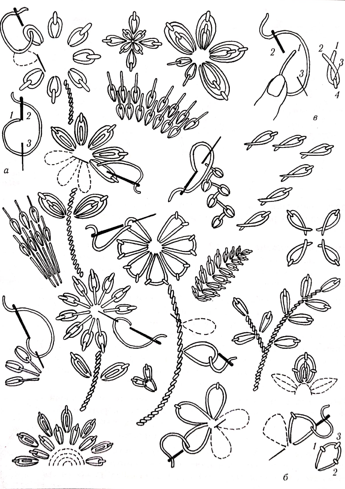
Рис. 62.Петляуприкріп та її різновиди
Контрольні питання:
- Охарактеризуйте прийоми закріплення робочої нитки на тканині.
- Назвіть варіанти швів козлик і петельний.
- Яке призначення початкових швів?
- Поясніть, у чому особливість швів за голкою, стеблового.
- На основі якого шва створено шов «петля уприкріп»?